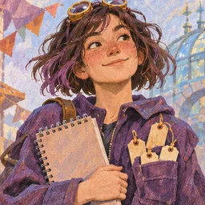
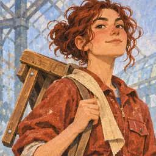

Тая Рябинская
плут 3 · ОЗ 24 · КД 13 · Скорость 30 фтВелокурьер и собирательница обходных маршрутов
Жёлтый плащ, мел за ухом, сумка с аккуратно заштопанной лямкой.
Ты принесла первое мокрое письмо, хотя всю дорогу светило солнце. Хочешь выяснить, как честно доставлять послание, которое может оказаться неверным.
Открыть фигурку для поля
Оружие и заклинания
Оружие · Рапира, Короткий лук
Григорий Лужин
воин 3 · ОЗ 31 · КД 11 · Скорость 30 фтРемонтник складной мебели
Фартук с деревянной застёжкой, крепкая трость-мерка и удивительно чистые руки.
Ты помогаешь в мастерской подвижных декораций. Хочешь понять, где кончается безопасный сценический трюк и начинается использование чужого доверия.
Открыть фигурку для поля
Оружие и заклинания
Оружие · Длинный меч, Ручной топор

Лина Мелова
волшебник 3 · ОЗ 20 · КД 12 · Скорость 30 фтУченица мастера чувствительной бумаги
Синий свитер, бумажные манжеты и увеличительное стекло на шнурке.
В бюро используется бумага твоей мастерской. Ты хочешь разобраться, что именно она умеет сообщать, прежде чем ей начнут верить без проверки.
Открыть фигурку для поля
Оружие и заклинания
Оружие · Боевой посох
Заклинания · Обнаружение магии, Туманный шаг

Даня Ручьёв
жрец 3 · ОЗ 24 · КД 11 · Скорость 30 фтСоседский помощник и мастер чайных сборов
Зелёный шарф, плоская аптечная сумка и кружка с неровной ручкой.
Ты устраиваешь тихие встречи в мастерской. Хочешь помочь встревоженным свидетелям так, чтобы поддержка не означала согласие с любой их версией.
Открыть фигурку для поля
Оружие и заклинания
Оружие · Боевой посох
Заклинания · Лечащее слово, Обнаружение магии

Рада Полозова
плут 3 · ОЗ 24 · КД 13 · Скорость 30 фтРедакторка маленькой городской газеты
Фиолетовые кеды, блокнот на пружине, карман с бумажными ярлыками.
Газета получила заголовок «Кто украл небо?». Ты решаешь, стоит ли печатать эффектное обвинение прежде, чем подтверждено само исчезновение.
Открыть фигурку для поля
Оружие и заклинания
Оружие · Рапира, Короткий лук
Сева Окладов
волшебник 3 · ОЗ 20 · КД 12 · Скорость 30 фтЭлектрик на пенсии и любитель бумажной магии
Клетчатая кепка, пенал с цветными карандашами и мягкие ботинки.
Ты помнишь несколько старых городских приборов, но Сборник видел только снаружи. Приятно снова быть учеником.
Открыть фигурку для поля
Оружие и заклинания
Оружие · Боевой посох
Заклинания · Обнаружение магии, Туманный шаг

Мила Авдеева
воин 3 · ОЗ 31 · КД 11 · Скорость 30 фтОрганизаторка дворовых мастерских
Комбинезон цвета кирпича, складной табурет и широкая полотняная лента.
Ты помогаешь готовить маленькие премьеры. На ближайшей обещано настоящее невозможное событие; хочется понять, на что именно согласились зрители.
Открыть фигурку для поля
Оружие и заклинания
Оружие · Длинный меч, Ручной топор